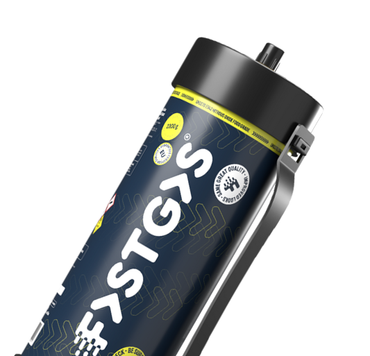
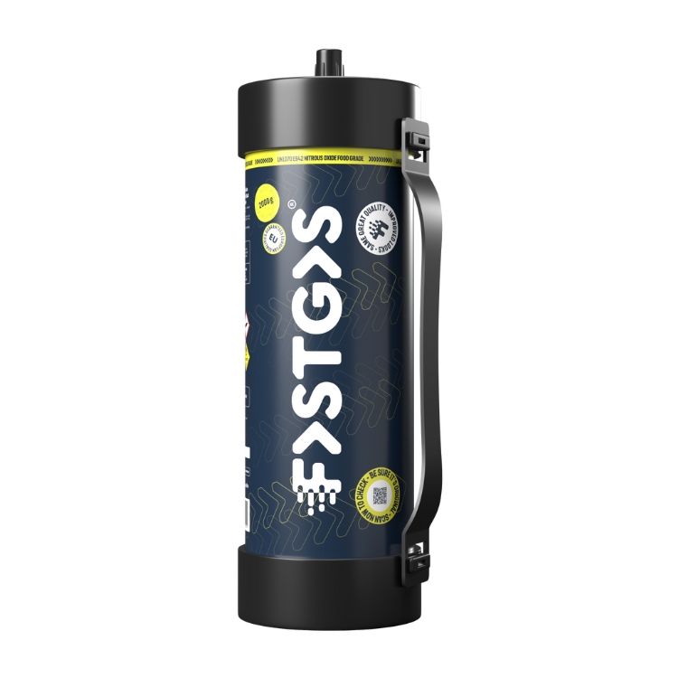
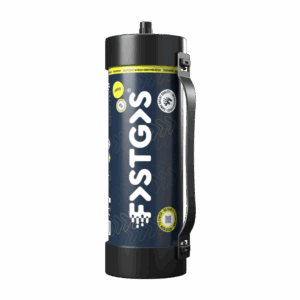

Amsterdam Centrum
Jordaan, Grachtengordel, Negen Straatjes, Nieuwmarkt, De Wallen, Oostelijke Eilanden en de Plantage.
Lachgas bestellen in Amsterdam Centrum →#1 Lachgas Amsterdam
Lachgas bestellen in Amsterdam? Wij bezorgen kwaliteitstanks in alle Amsterdamse stadsdelen — helder tarief, vriendelijke service, altijd persoonlijk contact.
24/7
Bereikbaar wanneer jij nodig hebt
Helder
Prijs en afspraak vooraf duidelijk
Amsterdam
Lokaal werkgebied & snelle rit

De belangrijkste informatie over lachgas bestellen en laten bezorgen bij Lachgas Service Amsterdam, overzichtelijk bij elkaar.
Lachgas Amsterdam bezorgen doen wij anders: minder bellen, minder wachten en meer zekerheid bij elke bestelling. Wij leveren lachgas van de beste kwaliteit in heel Amsterdam — duidelijke afspraken, heldere prijs, snelle en betrouwbare bezorging in alle stadsdelen.
Kies een moment dat past bij jouw schema. We zijn 24/7 beschikbaar en we houden je op de hoogte van de route en aankomst.
Wij leveren lachgas van de beste kwaliteit. Onze bezorgers werken volgens vaste veiligheidsrichtlijnen. Jij weet wat je krijgt.
Geen verborgen kosten op de bon. Wat je ziet bij het bestellen, betaal je — inclusief levering.
Vragen over je bestelling of Lachgas? Je bereikt ons direct — geen wachtrijen of anonieme chatbots.


Lachgas Service Amsterdam levert lachgas tanks aan huis in heel Amsterdam. Onze focus ligt op drie dingen: kwaliteit, snelle en betrouwbare bezorging en een transparante prijs. Je kiest een tank in de maat die bij jou past — wij leveren cilinders in verschillende maten, waaronder 2 kg tanks — en wij brengen die naar het adres dat jij opgeeft.
Weet je niet zeker welke hoeveelheid je nodig hebt, bijvoorbeeld voor een groter feest of een evenement? Vraag het ons via WhatsApp of telefoon. Wij denken graag met je mee, zodat je de juiste keuze maakt.
Wij leveren voor thuis, voor feesten, voor evenementen en voor andere gelegenheden in Amsterdam en omgeving. Het leveradres mag een woning, een hotel of een bedrijf zijn. Voor grotere hoeveelheden of een levering op een specifiek tijdstip raden we aan vooraf contact op te nemen, zodat we de bezorging goed kunnen plannen.
Wij leveren uitsluitend kwalitatief lachgas en onze bezorgers werken volgens vaste veiligheidsrichtlijnen. Bij de overdracht helpen we mee, zodat alles veilig verloopt. Lees meer over onze voordelen of bekijk de veelgestelde vragen.
Wij bezorgen lachgas in heel Amsterdam. Kies je stadsdeel voor lokale informatie over levering, wijken en bezorgtijden.
Onder elk stadsdeel vallen tientallen buurten. Hieronder zie je per stadsdeel een greep uit de wijken waar wij leveren. Staat jouw buurt er niet bij? Stuur ons je postcode, dan bevestigen we of we bij jou kunnen bezorgen.
Jordaan, Grachtengordel, Negen Straatjes, Nieuwmarkt, De Wallen, Oostelijke Eilanden en de Plantage.
Lachgas bestellen in Amsterdam Centrum →NDSM, Tuindorp Oostzaan, Volewijck, Vogelbuurt, Van der Pekbuurt en Molenwijk.
Lachgas bestellen in Amsterdam Noord →Sloterdijk, Osdorp, Geuzenveld, Slotermeer, Slotervaart en Overtoomse Veld.
Lachgas bestellen in Amsterdam Nieuw-West →Indische Buurt, Watergraafsmeer, Oud-Oost, Dapperbuurt, Science Park en omgeving Amstel Station.
Lachgas bestellen in Amsterdam Oost →Oud-West, De Baarsjes, Bos en Lommer, Mercatorplein, Kinkerbuurt, Staatsliedenbuurt en Westerpark.
Lachgas bestellen in Amsterdam West →Het historische Weesp aan de Vecht, sinds 2022 onderdeel van de gemeente Amsterdam.
Lachgas bestellen in Weesp →Rivierenbuurt, De Pijp, Oud-Zuid, Museumkwartier, Zuidas, Beethovenstraat en Apollolaan.
Lachgas bestellen in Amsterdam Zuid →Bijlmer-Centrum, Bijlmer-Oost, Gaasperdam, Driemond, Holendrecht en Bullewijk.
Lachgas bestellen in Amsterdam Zuidoost →Van bestelling tot lachgas tank aan de deur — snel, helder en zonder gedoe.
App of bel direct en geef ons je gewenste hoeveelheid lachgas aan — duurt maar een paar minuten.
Je ontvangt een bevestiging met levermoment en totaalbedrag.
We leveren op het afgesproken adres en helpen bij een veilige overdracht.
Een bestelling plaatsen kost je maar een paar minuten. Stuur ons een WhatsApp-bericht of bel, en geef het volgende door:
Daarna ontvang je een bevestiging met het levermoment en het totaalbedrag, inclusief levering. Pas als jij akkoord bent, gaan wij onderweg. Op het afgesproken moment leveren we op het adres dat je hebt doorgegeven en zorgen we voor een veilige overdracht.
Rond weekenden, feestdagen en grote evenementen kan het drukker zijn. Bestel dan iets eerder en geef je gewenste tijdstip door, zodat we kunnen plannen. Meer uitleg vind je op de pagina werkwijze, en de afspraken staan in onze algemene voorwaarden.
Er zijn veel aanbieders die lachgas bezorgen in Amsterdam. Deze zes punten helpen je om een betrouwbare dienst te herkennen — en zo werken wij.
Lachgas is uitsluitend bestemd voor volwassenen (18+). Gebruik het altijd verantwoord en houd deze basisregels aan:
Acute klachten of een noodgeval? Bel direct 112. Betrouwbare, onafhankelijke informatie vind je bij Drugsinfo van het Trimbos-instituut. Gebruik lachgas altijd in overeenstemming met de geldende wet- en regelgeving; de actuele regels vind je op rijksoverheid.nl.
Op zoek naar lachgas in Amsterdam? Lachgas Service Amsterdam is gespecialiseerd in het thuisbezorgen van lachgas tanks in de hoofdstad en directe omgeving. Of je nu lachgas bestelt voor een feestje, een evenement of gewoon voor thuis — wij zorgen dat de bestelling snel, veilig en met een duidelijke prijs bij je wordt afgeleverd.
Lachgas Amsterdam bestellen gaat bij ons via WhatsApp of telefoon: geef je adres, de gewenste hoeveelheid en het tijdstip door, en wij bevestigen de levering. Dankzij ons lokale netwerk in Amsterdam kunnen we doorgaans in 20 tot 30 minuten leveren, in elk stadsdeel — van Centrum en West tot Zuidoost en Weesp. Bekijk onze veelgestelde vragen voor meer informatie, of ga direct naar de bezorggebieden pagina om te zien of we in jouw buurt leveren.
Snel antwoord op de vragen die we het vaakst krijgen. Staat jouw vraag er niet bij? Bekijk alle veelgestelde vragen of neem contact op.
Lachgas (distikstofmonoxide, N2O) is een kleurloos gas dat onder meer wordt gebruikt in de zorg, in de voedingsindustrie en in de horeca. Lachgas Service Amsterdam levert lachgas tanks aan volwassenen en verwacht dat je het verantwoord en volgens de geldende wet- en regelgeving gebruikt. Lees ook hoe je veilig en verantwoord met lachgas omgaat.
Een volledig leveradres met postcode en huisnummer (en eventueel verdieping), de gewenste hoeveelheid of maat, je gewenste tijdstip en een telefoonnummer waarop je bereikbaar bent. Stuur die gegevens via WhatsApp of bel ons, dan bevestigen wij het levermoment en het totaalbedrag.
Ja. Wij zijn 24 uur per dag, 7 dagen per week bereikbaar via WhatsApp en telefoon. Het concrete levermoment stemmen we altijd vooraf met je af.
Dat hangt af van je locatie, het tijdstip en de drukte op de weg. Doorgaans bezorgen wij in Amsterdam in 20 tot 30 minuten. In Weesp of bij drukte kan het iets langer duren. Wij zijn eerlijk over de verwachte aankomsttijd en bevestigen die voordat we onderweg gaan.
Wij werken met één duidelijke prijs. Het bedrag dat je bij de bevestiging ziet, is wat je betaalt, inclusief levering en zonder verborgen kosten of toeslagen achteraf. Vraag via WhatsApp of telefoon naar de actuele prijs.
In alle stadsdelen van Amsterdam (Centrum, Noord, Zuid, Oost, West, Zuidoost en Nieuw-West) en in Weesp. Bekijk de pagina bezorggebieden voor de wijken per stadsdeel, of stuur ons je postcode als je twijfelt.
Ja, je kunt een woning, een hotel of een bedrijfsadres opgeven. Geef bij een hotel of bedrijf een aanspreekpunt en een geschikt moment door, zodat de overdracht soepel verloopt.
Zorg dat je bereikbaar bent op het afgesproken moment. Kun je toch niet aanwezig zijn? Neem dan zo snel mogelijk contact met ons op, dan kijken we samen naar een nieuw levermoment. Voor wijzigen en annuleren gelden de afspraken in je bevestiging en onze algemene voorwaarden.
Bewaar een tank rechtop, goed vastgezet, koel en droog en buiten bereik van kinderen. Laat hem niet achter in een warme auto of in de zon.
Via WhatsApp, telefoon (+372 5357 7881) of e-mail (info@lachgasserviceamsterdam.nl). De snelste manier is WhatsApp of telefoon. Op de contactpagina vind je ook een contactformulier.
Lachgas Service Amsterdam is 24 uur per dag, 7 dagen per week bereikbaar. De snelste manier om te bestellen is via WhatsApp of telefoon. Voor andere vragen kun je ons mailen of het contactformulier gebruiken.